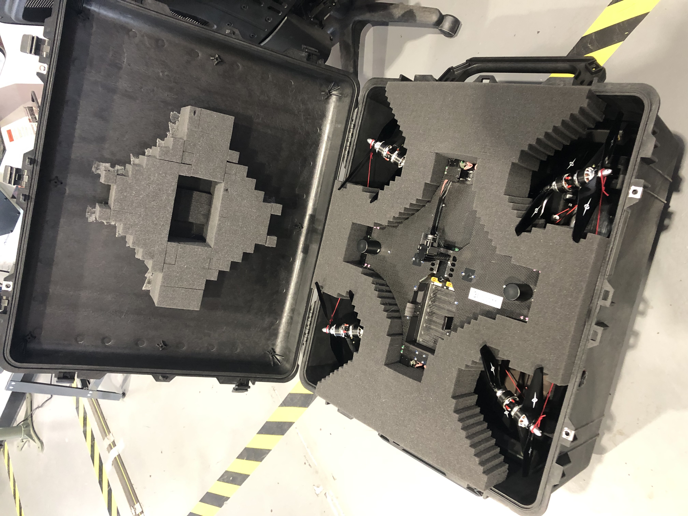
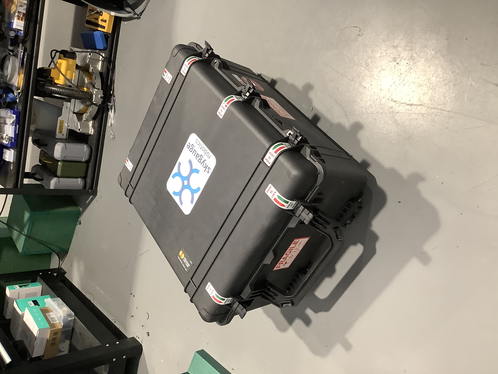
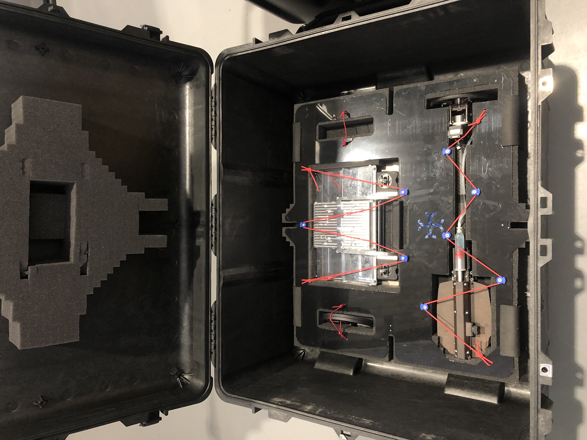

The Drone Case project focused on creating a durable and protective solution for sensitive drone equipment.
Using premium materials and innovative design, this case safeguards expensive and precision instruments from
drops over one meter and harsh environmental conditions.



Key Features
- Premium Materials: Built with a Pelican case, shock-absorbing foam, and
impact-resistant polycarbonate.
- Drop Protection: Protects drones and precision instruments from falls over one
meter.
- Waterproof: Ensures safe transport in rain and humid environments.
- Custom Fit: Foam compartments designed to securely hold drones, batteries, and
accessories.
- Durable and Portable: Combines lightweight materials with rugged construction for
field use.
Back to Portfolio